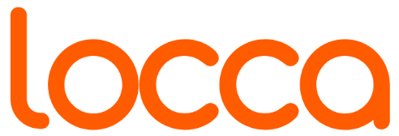

Dilini seç · Choose your language · Выбери язык
TR
Ziyaret et. Tarat. Kazan.
EN
Visit. Scan. Earn.
RU
Заходи. Сканируй. Получай.
Kaydır · Swipe · Листай

Dilini seç · Choose your language · Выбери язык
Kaydır · Swipe · Листай